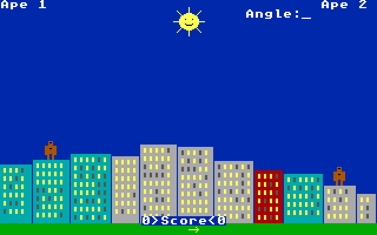
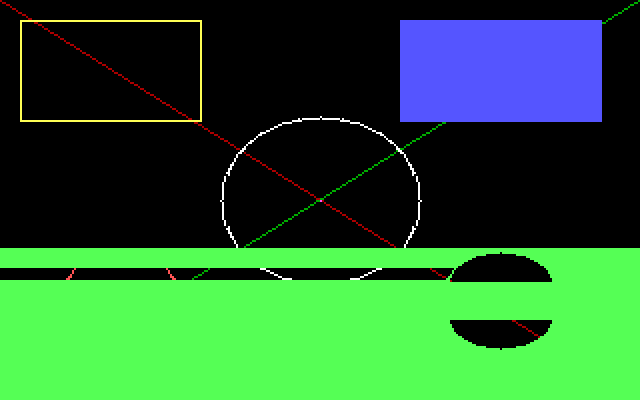
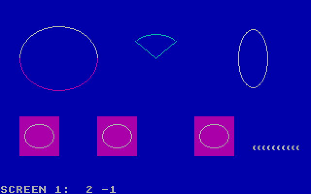

First Edition (October 1981)
Changes are made periodically to the information herein; any such changes will be reported in subsequent revisions.
This manual describes CBasic Version 1.00, the BASIC language for the COS disk operating system on the pc86 personal computer.
CBasic is supplied on the COS System Diskette as the program BASIC.COM, together with the sample game APES.BAS. Read Chapter 2, "Writing and Running Programs," before you write your first program.
Products are not stocked at the address below. Comments on this manual may be addressed to CucsiCorp, Personal Computer Software, Publications Department. CucsiCorp may use or distribute any of the information you supply in any way it believes appropriate without incurring any obligations whatever.
© Copyright CucsiCorp 1981
CBasic, COS and CucsiCorp are trademarks of CucsiCorp.
This manual tells you how to write programs in CBasic, the BASIC language of the pc86 personal computer, and how to run them under COS. CBasic is a structured BASIC: besides the familiar PRINT, INPUT, GOTO and line numbers, it has named subprograms and functions with their own variables, block IF and SELECT CASE statements, DO loops, records, and graphics and sound statements for writing games.
You do not need to know BASIC to use this manual, but you should know how to use COS: how to start it, how to name files and how to use the text editor, EDIT. These are described in the COS User's Guide.
| Chapter 1 | Introduction: what CBasic is and what you need to use it. |
| Chapter 2 | Writing and Running Programs: EDIT and BASIC, errors, stopping a program. |
| Chapter 3 | The Language: variables and types, expressions, control statements, arrays, records, subprograms and functions, error handling. |
| Chapter 4 | Text, Keyboard and Files: the screen in text mode, input from the keyboard, data files. |
| Chapter 5 | Graphics and Sound: the graphics modes, drawing, pictures, and music. |
| Chapter 6 | Statements: every statement, in alphabetic order. |
| Chapter 7 | Functions: every built-in function, in alphabetic order. |
| Appendix A | Error Messages. |
| Appendix B | Technical Information: limits, numbers, memory. |
| Appendix C | The Sample Program APES.BAS. |
| CAPITALS | Keywords. You may type them in small letters: CBasic does not mind. |
| italics | Items you supply: a variable, an expression, a file name. |
| [ ] | The item inside is optional. Do not type the brackets. |
| { a | b } | Choose one of the items. |
| ... | The item before may be repeated. |
| basic hello | In the screen examples, what you type is printed in bold and underlined. |
| &H3D | A hexadecimal number, as it is written in CBasic. |
The screen examples in this manual were made on the machine itself.
CBasic is a programming language. A CBasic program is a list of instructions, written in words that look like English (PRINT, INPUT, IF, THEN), that the computer carries out one after another. With CBasic you can make the computer calculate, keep lists of names and numbers, read and write files on diskettes, draw pictures on the screen and play music.
You write a program with the COS text editor, EDIT, and save it in a file whose name ends in .BAS. Then you run it with the BASIC command:
A:\>edit hello.bas A:\>basic hello
BASIC reads the whole program, checks it, and translates it into a compact code that the computer runs quickly. If the program has a mistake in it, BASIC tells you the line and what is wrong before anything runs; you correct it with EDIT and try again.
Here is a short program. The lines that begin with an apostrophe are remarks: they are for the people who read the program, and CBasic skips them.
' HELLO.BAS - a first program INPUT "What is your name"; N$ PRINT "Hello, "; N$; "!" FOR I = 1 TO 3 PRINT I; "squared is"; I * I NEXT
INPUT shows a question and waits for an answer; the answer is kept in the variable N$ (the $ means that it holds text). PRINT shows text and numbers. FOR and NEXT repeat the PRINT between them, with I taking the values 1, 2 and 3. This is what you see when you run it:
A:\>basic hello What is your name? Ana Hello, Ana! 1 squared is 1 2 squared is 4 3 squared is 9 A:\>
The System Diskette has a game written in CBasic, APES.BAS. Two apes stand on the roofs of a city and throw bananas at each other; each player in turn chooses the angle and the speed of the throw, and the wind and the gravity do the rest. To play it:
A:\>basic apes

Ape Duel: the city, the apes, the sun and the wind arrow at the bottom.
The game uses most of what CBasic can do: subprograms and functions, records, arrays, graphics, pictures moved with GET and PUT, the keyboard, music and the timer. Its listing is in Appendix C; reading it is a good way to learn CBasic once you know the basics.
A CBasic program is an ordinary text file, written with EDIT. Give it a name that ends in .BAS:
A:\>edit hello.bas
Type the program a line at a time, pressing Enter at the end of each line. You may type keywords in small or capital letters, and indent lines with spaces to show their structure: CBasic ignores the spaces at the start of a line. Save the program with F2 and leave EDIT with Esc.
BASIC [d:][path]filename[.BAS]
BASIC adds .BAS to the name if you do not give an extension. The program runs at once. When it ends — when it reaches an END statement, or its last line — the COS prompt comes back. A program that was drawing in a graphics mode waits for a key first, so that you can look at the picture, and then returns the screen to text.
The text a program prints starts where the cursor was, below the BASIC command, and the screen scrolls up when it fills, as it does for COS.
Before running a program, BASIC reads all of it. If a line breaks the rules of the language, BASIC shows the name of the file, the line number and a message, and the program does not run:
A:\>basic oops OOPS.BAS(2): Syntax error A:\>
Line 2 of OOPS.BAS is PRINT 10 / (1 + — the expression is not finished. Open the program with EDIT, press F5 and type the line number to go to it, correct it and save. Appendix A lists the messages.
Other mistakes can only be found while the program runs: a division by zero, an array element that does not exist, a file that is not on the diskette. Then the program stops with a message and the line:
A:\>basic zero Ten divided by zero: Division by zero in line 3 A:\>
A program can also catch these errors itself and carry on, with ON ERROR GOTO (Chapter 3).
Press Ctrl-C to stop a program that is running: it ends with the message "Break" and the line it was on. Files the program had open are closed.
BASIC does not interpret your program a line at a time. It compiles it: it reads the whole program twice, the first time to learn the names of its subprograms, functions and records, the second to translate each statement into a code for a simple machine that BASIC carries inside it. Then it runs that code. Because the types of all the variables are known when the program is translated, each operation already knows whether it works on integers, real numbers or text, and the program runs faster than it would if every line were read again each time.
This is why a program with a mistake does not run at all: the mistake is found while the program is translated, even in a part that would rarely be used.
A program is made of lines, and each line holds one or more statements separated by colons:
X = 1: Y = 2: PRINT X + Y
A line may begin with a line number or a label, which other statements use to jump to it. A line number is a whole number from 0 to 65535; a label is a name followed by a colon. Line numbers need not be in order and need not be on every line.
100 PRINT "a numbered line"
Again:
PRINT "a labeled line"
GOTO Again
Everything after an apostrophe (') is a remark, and so is a statement that begins with REM. Remarks may be on a line of their own or at the end of a statement.
Names of variables, labels, subprograms and functions begin with a letter and may have letters, digits and periods, up to 40 characters. Capitals and small letters are the same: Total, TOTAL and total are one name. A name cannot be a keyword: PRINT, NAME... see the list of keywords in Appendix B.
CBasic has four kinds of values, called types. The last character of a variable's name, its type suffix, tells which type it holds:
| Suffix | Type | Holds |
|---|---|---|
| % | INTEGER | Whole numbers from -32768 to 32767. The fastest type. |
| & | LONG | Whole numbers from -2147483648 to 2147483647. |
| ! or # | SINGLE | Real numbers with about 7 significant digits, from about 1.2E-38 to 3.4E+38. # is accepted for programs that ask for double precision, but the number is kept as SINGLE. |
| $ | STRING | Text, from 0 to 32767 characters. |
A variable without a suffix is SINGLE, unless a DEFINT, DEFLNG, DEFSNG, DEFDBL or DEFSTR statement says otherwise for its first letter, or it was declared with AS (see DIM). Programs that use mostly whole numbers often begin with DEFINT A-Z, which makes every variable without a suffix an INTEGER and the program faster.
A% and A$ are different variables. Variables need not be declared: a variable that has not been given a value is 0, or "" (an empty string).
Numbers are written in decimal, with an optional point and exponent: 12, -3.5, .25, 1.5E+6. Whole numbers that fit are INTEGER or LONG; others are SINGLE. &H and &O begin hexadecimal and octal numbers: &HFF is 255, &O17 is 15. A suffix may be added: 5& is a LONG.
Strings are written between double quotation marks: "Hello". A string cannot contain a quotation mark; use CHR$(34) for it.
The CONST statement gives a name to a value that does not change:
CONST PI = 3.141593, TRUE = -1, FALSE = 0, TITLE$ = "Ape Duel"
An expression computes a value from constants, variables, function results and operators. These are the operators, from the one done first to the one done last:
| Operator | Meaning |
|---|---|
| ( ) | What is inside parentheses is done first |
| ^ | Raising to a power: 2 ^ 10 is 1024 |
| - (unary) | Negation: -X |
| * / | Multiplication, division. / always gives a real number: 7 / 2 is 3.5 |
| \ | Integer division, rounding towards 0: 7 \ 2 is 3, -7 \ 2 is -3 |
| MOD | The remainder of an integer division: 7 MOD 3 is 1 |
| + - | Addition, subtraction. + also joins strings: "ab" + "cd" is "abcd" |
| = <> < > <= >= | Comparisons: equal, not equal, less, greater, less or equal, greater or equal |
| NOT | Inverts every bit |
| AND | Bits that are 1 in both |
| OR | Bits that are 1 in either |
| XOR | Bits that are 1 in only one |
| EQV, IMP | Equivalence (NOT XOR) and implication (NOT a OR b) |
A comparison gives -1 when it is true and 0 when it is false, and IF, WHILE and the like take any value that is not 0 as true. Since -1 has all its bits set, AND, OR and NOT work on comparisons as you expect: IF X > 0 AND X < 10 THEN ... Strings are compared character by character, by their codes.
When an operation mixes types, the value of the smaller type is converted first: INTEGER to LONG to SINGLE. When a real number is stored in an INTEGER or LONG variable, it is rounded to the nearest whole number (halves go to the even number: 2.5 becomes 2, 3.5 becomes 4). A result too large for its type stops the program with "Overflow".
IF does something only when a condition is true. On one line:
IF Score > Best THEN Best = Score: PRINT "New record!" IF A$ = "y" THEN PRINT "Yes" ELSE PRINT "No"
Or as a block, which may have ELSEIF and ELSE parts and ends with END IF:
IF Age < 13 THEN
PRINT "Child"
ELSEIF Age < 20 THEN
PRINT "Teenager"
ELSE
PRINT "Adult"
END IF
SELECT CASE compares one value with several: the first CASE that matches runs, and CASE ELSE runs when none does. A CASE may list values, ranges with TO, and comparisons with IS:
SELECT CASE Key$
CASE "0" TO "9": PRINT "a digit"
CASE "+", "-": PRINT "a sign"
CASE IS < " ": PRINT "a control key"
CASE ELSE: PRINT "something else"
END SELECT
FOR ... NEXT repeats with a counter, from a first value to a last one, in steps of 1 or of the STEP given (which may be negative or a fraction):
FOR I = 10 TO 1 STEP -1: PRINT I;: NEXT I
DO ... LOOP repeats while a condition is true (WHILE) or until it becomes true (UNTIL), tested at the start or at the end. Without a condition it repeats forever, until an EXIT DO:
DO WHILE N < 100: N = N * 2: LOOP
DO
K$ = INKEY$
LOOP UNTIL K$ <> ""
WHILE ... WEND is the older form of DO WHILE ... LOOP. EXIT FOR and EXIT DO leave the loop at once.
GOTO jumps to a line number or label. GOSUB jumps to a subroutine and RETURN comes back to the statement after the GOSUB. ON n GOTO and ON n GOSUB jump to the first, second... of a list of labels. Subprograms and functions, described next, are usually a better way to divide a program.
An array is a numbered list of variables of one type, declared with DIM:
DIM Score(10), Names$(1 TO 20), Board%(1 TO 8, 1 TO 8) Score(3) = 120 Board%(2, 5) = 1
Score has the elements Score(0) to Score(10); Names$ has 20, numbered from 1. Arrays may have up to 8 dimensions, and their bounds may be any expressions, worked out when the DIM runs. An array used without a DIM gets elements 0 to 10 in each dimension (OPTION BASE 1 makes the first element 1). REDIM gives an array new bounds, and ERASE frees it; LBOUND and UBOUND tell its bounds. Using an element outside the bounds stops the program with "Subscript out of range".
A TYPE statement describes a record: a group of numbers that go together. Variables and arrays of that type are declared with AS, and each field is reached with a period:
TYPE Building
X AS INTEGER
Width AS INTEGER
Height AS SINGLE
END TYPE
DIM City(1 TO 20) AS Building, Home AS Building
City(3).Width = 25
PRINT City(3).Width
Fields may be INTEGER, LONG, SINGLE, DOUBLE or another record type. Strings are not allowed in records.
A SUB is a part of the program with a name, which other parts call. It may take parameters, and its variables are its own: an I inside a SUB is not the I of the main program.
DECLARE SUB Box (Row, Col, Wide)
Box 5, 10, 20
CALL Box(8, 10, 30) ' the same, with CALL
SUB Box (Row, Col, Wide)
LOCATE Row, Col
PRINT STRING$(Wide, "*")
END SUB
A FUNCTION is like a SUB, but gives back a value, which it sets by assigning to its own name. Its suffix, or AS, gives the type of the value:
FUNCTION Fact& (N)
IF N <= 1 THEN Fact& = 1 ELSE Fact& = N * Fact&(N - 1)
END FUNCTION
Functions and subprograms may call themselves, as Fact& does. SUBs and FUNCTIONs come after the main program, each with its END SUB or END FUNCTION; the main program ends where the first of them begins. They may be called before or after the place where they are written, and the DECLARE statements that list them are accepted but not needed. EXIT SUB and EXIT FUNCTION return at once.
Parameters are passed by reference: when the argument is a variable, the SUB works on the variable itself, and a change it makes is seen by the caller. When the argument is an expression, or a variable of another type, or a variable in parentheses, the SUB gets a copy:
SUB Bump (N)
N = N + 1
END SUB
X = 1: Bump X: PRINT X ' prints 2
Bump (X): PRINT X ' prints 2: Bump changed a copy
A whole array is passed with empty parentheses, Total(Scores()), and declared the same way in the SUB: SUB Total (List()). Records and arrays of records are passed with AS: SUB Draw (B() AS Building).
The variables of the main program are not seen inside a SUB, unless they are declared with DIM SHARED in the main program, or listed in a SHARED statement inside the SUB:
DIM SHARED Lives, Level
SUB Lose
Lives = Lives - 1 ' the main program's Lives
END SUB
DEF FN defines a function in one line, in the main program. Its name begins with FN; its parameters are its own, but every other name in it is a variable of the main program:
DEF FnRand (N) = INT(RND(1) * N) + 1 PRINT FnRand(6) ' a die
ON ERROR GOTO label asks that, instead of stopping, a program that meets an error jump to label, in the main program. There, ERR tells which error it was (Appendix A) and ERL the line. RESUME runs the statement that failed again, RESUME NEXT continues with the one after it, and RESUME label continues at a label. ON ERROR GOTO 0 turns the handling off again.
ON ERROR GOTO NoScreen
Mode = 13
SCREEN Mode
ON ERROR GOTO 0
...
NoScreen:
Mode = 1 ' try the other graphics mode
RESUME
An error inside a SUB or FUNCTION goes back to the main program: the handler runs there, and RESUME runs again the statement of the main program that had called the SUB. ERROR n makes the error n happen, to test a handler.
DATA statements hold numbers and strings inside the program, and READ takes them in order. RESTORE starts again from the first DATA, or from the first after a label:
RESTORE Prices FOR I = 1 TO 3: READ Item$, Cost: PRINT Item$, Cost: NEXT Prices: DATA "Bread", 1.25, "Milk", .9, "Eggs", 2.1
Strings in DATA need quotation marks only when they contain commas, colons or spaces at their ends.
When a program starts, the screen is in text mode, 80 columns by 25 lines, as COS leaves it. PRINT writes at the cursor and moves it on. The rows are numbered 1 to 25 from the top, and the columns 1 to 80 from the left.
PRINT shows a list of items. A semicolon between two items puts them together; a comma moves to the next print zone, every 14 columns. At the end of a PRINT the cursor goes to the next line, unless the list ends with a semicolon or comma:
PRINT "A"; "B", "C" PRINT 1; -2; 3.5 PRINT "same line"; PRINT " - continued"
AB C 1 -2 3.5 same line - continued
Numbers are printed with a space before them, or a minus sign, and a space after. Real numbers show up to 7 digits, without zeros at the end; very large and very small ones are shown with an exponent: 1E+10, 2.5E-05. TAB(n) moves to column n, SPC(n) prints n spaces. CLS clears the screen, and LOCATE row, col moves the cursor:
CLS LOCATE 12, 35: PRINT "In the middle";
COLOR foreground, background chooses the colors of what is printed next. In text mode there are 16 foreground colors and 8 background colors; adding 16 to the foreground makes it blink.
| Color | Name | Color | Name |
|---|---|---|---|
| 0 | Black | 8 | Gray |
| 1 | Blue | 9 | Light blue |
| 2 | Green | 10 | Light green |
| 3 | Cyan | 11 | Light cyan |
| 4 | Red | 12 | Light red |
| 5 | Magenta | 13 | Light magenta |
| 6 | Brown | 14 | Yellow |
| 7 | White | 15 | Bright white |
VIEW PRINT top TO bottom makes only those rows scroll, so that a title or a score at the top of the screen stays where it is. VIEW PRINT alone gives back the whole screen. CSRLIN and POS(0) tell the row and column of the cursor.
INPUT shows a question mark, or a prompt and a question mark, and waits for the user to type a line and press Enter. Several variables are given in one answer, separated by commas. When the answer does not fit the variables — a word where a number was asked, or too many items — INPUT says "Redo from start" and asks again:
INPUT "Width and height"; W, H PRINT "Area:"; W * H
Width and height? 3,x Redo from start Width and height? 3,4 Area: 12
A comma after the prompt, instead of a semicolon, leaves out the question mark. LINE INPUT reads a whole line into a string variable, commas and all, without a question mark.
INKEY$ does not wait: it gives the key that was pressed, or "" when none was. It is how games read the keyboard while things move. The special keys (arrows, function keys) give two characters: CHR$(0) and the key's scan code. For example, the up arrow gives CHR$(0) + "H".
DO
K$ = INKEY$
IF K$ = CHR$(0) + "H" THEN Y = Y - 1
IF K$ = CHR$(0) + "P" THEN Y = Y + 1
LOOP UNTIL K$ = CHR$(27) ' Esc
INPUT$(n) waits for n keys and gives them without showing them. SLEEP n waits n seconds, or until a key is pressed; SLEEP alone waits for a key.
A program keeps information from one run to the next in files on the diskette. A file is opened with a number, used with that number, and closed:
OPEN "SCORES.TXT" FOR OUTPUT AS #1
PRINT #1, "Ana"; 120
WRITE #1, "Luis", 95
CLOSE #1
OPEN "SCORES.TXT" FOR INPUT AS #1
DO UNTIL EOF(1)
INPUT #1, Who$, Points
PRINT Who$, Points
LOOP
CLOSE #1
| Mode | Use |
|---|---|
| OUTPUT | A new file, written from the start. A file that existed loses what it had. |
| APPEND | Writing at the end of a file; a new file if there is none. |
| INPUT | Reading from the start. The file must exist ("File not found"). |
PRINT # writes as PRINT does on the screen. WRITE # writes items separated by commas, with strings in quotation marks, which is the form INPUT # reads back most safely. INPUT # reads items separated by commas or line ends (numbers also end at a space); LINE INPUT # reads a whole line. EOF(n) is true when there is nothing more to read. Up to 8 files may be open at once, with numbers 1 to 8; FREEFILE gives the first number not in use. CLOSE alone closes them all, and so does the end of the program. KILL erases a file.
SCREEN changes the mode of the display. Both graphics modes have 320 points across and 200 down; the point (0, 0) is the top left corner and (319, 199) the bottom right.
| Mode | What it is |
|---|---|
| SCREEN 0 | Text, 80 columns by 25 rows, 16 colors. The mode programs start in. |
| SCREEN 1 | Graphics, 320 by 200, 4 colors at a time, chosen from two palettes. Text is 40 columns by 25 rows. |
| SCREEN 13 | Graphics, 320 by 200, 256 colors at a time. Text is 40 columns by 25 rows. |
Changing the mode clears the screen. Asking for a mode the display does not have stops the program with "Illegal function call", which a program can catch with ON ERROR GOTO to choose another mode. PRINT, LOCATE and INPUT work in the graphics modes too; the text is drawn over the picture in the color chosen with COLOR.
In SCREEN 1 the points have colors 0 to 3. Color 0 is the background; COLOR background, palette sets it to one of the 16 text colors and chooses the other three:
| Color | Palette 0 | Palette 1 |
|---|---|---|
| 1 | Green | Cyan |
| 2 | Red | Magenta |
| 3 | Brown | White |
In SCREEN 13 the colors are 0 to 255. The first 16 are the text colors, then come 16 grays and a range of hues. PALETTE color, value changes what a color looks like: value is red + 256 * green + 65536 * blue, each from 0 to 63. In SCREEN 1, the value is one of the 16 text colors. PALETTE alone puts the colors back.
SCREEN 13 PALETTE 0, 42 * 65536 ' color 0, the background, becomes blue
Coordinates are written in parentheses, (x, y). With STEP before them they are counted from the last point drawn. Real numbers are rounded, and points outside the screen are simply not drawn. Where the color is left out, the foreground color is used (3 in SCREEN 1, 15 in SCREEN 13).
| PSET (x, y), color | A point. PRESET is the same with the background color as the default. |
| LINE (x1, y1)-(x2, y2), color | A line. With ,B at the end, a box; with ,BF, a filled box. |
| CIRCLE (x, y), r, color | A circle, or an arc, an ellipse, a slice (see CIRCLE in Chapter 6). |
| PAINT (x, y), color, border | Fills the area around the point, up to the border color. |
| POINT(x, y) | The color of a point, or -1 off the screen. |
SCREEN 13 LINE (10, 10)-(100, 60), 14, B LINE (200, 10)-(300, 60), 9, BF CIRCLE (160, 100), 50, 15 CIRCLE (60, 150), 30, 12, 0, 3.14159 CIRCLE (250, 150), 30, 10 PAINT (250, 150), 10

Lines, boxes, circles, an arc and a painted circle in SCREEN 13.
Circles look round on the screen although its points are not square: CIRCLE draws them 5/6 as tall as they are wide. Its last parameter, the aspect, changes that: 2 makes an ellipse twice as tall as it is wide.
GET copies a rectangle of the screen into an array, and PUT draws it again anywhere. This is how a game moves a figure without drawing it point by point each time:
DIM Ship%(100)
CIRCLE (10, 10), 8, 14: PAINT (10, 10), 14
GET (0, 0)-(20, 20), Ship%
CLS
FOR X = 0 TO 300 STEP 4
PUT (X, 90), Ship%, XOR ' draw it
T! = TIMER: DO: LOOP UNTIL TIMER <> T! ' a moment
PUT (X, 90), Ship%, XOR ' and erase it
NEXT
With XOR, drawing the same picture twice in the same place leaves the screen as it was, so the background is not spoiled. The other ways of drawing are PSET (the picture as it is), PRESET (its colors inverted), AND and OR. The array must be large enough: 4 bytes plus, in SCREEN 13, one byte for each point, or in SCREEN 1 a quarter byte for each point, each row rounded up to a whole byte. An INTEGER array has 2 bytes per element, a LONG array 4.
Pictures may also be written in DATA statements and read into a LONG array: the first value holds the width (in bits: points times 2 in SCREEN 1, times 8 in SCREEN 13) and the height (times 65536), and the rest the points, four to a byte in SCREEN 1.

SCREEN 1 with palette 1: arcs, a slice, an ellipse, pictures put with PSET and XOR, and a row of bananas read from DATA.
BEEP sounds the speaker for a quarter of a second. SOUND frequency, duration plays a tone of the frequency given in hertz (37 to 32767) for the duration given in clock ticks, of which there are 18.2 in a second.
PLAY plays a tune written as a string, in a little music language:
PLAY "T120 O3 L8 CDEFGAB > C" ' a scale PLAY "MS L16 EFGEFDC" ' short, separated notes
| Command | Meaning |
|---|---|
| A to G | A note, with # or + for sharp and - for flat after it, then optionally its length: C4, F#8. |
| N n | The note number n, 1 to 84 (7 octaves of 12 notes); N0 is a rest. |
| O n | The octave, 0 to 6. Octave 3 begins with middle C. The first octave is 4. |
| < > | One octave down, one octave up. |
| L n | The length of the notes that follow: 1 a whole note, 2 a half, 4 a quarter (the first length)... up to 64. |
| P n | A pause of length n. |
| . | After a note or pause: half as long again. Two dots: three quarters again. |
| T n | The tempo: quarter notes in a minute, 32 to 255 (the first is 120). |
| MN, ML, MS | Normal (each note sounds 7/8 of its length), legato (all of it), staccato (3/4). |
| MF, MB | Accepted, for tunes written for other computers; the music always plays to the end before the program goes on. |
The octave, length, tempo and style stay set from one PLAY to the next.
TIMER gives the seconds since midnight, with a resolution of about a twentieth of a second; a program waits a moment by looping until TIMER has moved on. RND gives a random number from 0 up to (but not including) 1; INT(RND * 6) + 1 is a die. The numbers come in the same order each time the program runs, unless RANDOMIZE TIMER, at the start, makes them begin somewhere different.
The statements are in alphabetic order. Each one has its format, what it does, and the details to know. Statements that belong together, like FOR and NEXT, are described together under the first one.
BEEP
Sounds the speaker at 800 hertz for about a quarter of a second. PRINT CHR$(7) does the same.
CALL name [(argument, ...)] name [argument, ...]
Runs the SUB name. With CALL the arguments are in parentheses; without it they are not. See SUB, and "Subprograms and Functions" in Chapter 3.
CIRCLE [STEP] (x, y), radius [, [color] [, [start] [, [end] [, aspect]]]]
Draws a circle with its center at (x, y). start and end are angles in radians, from 0 to 2π (6.283185), counted counterclockwise from the right: with them, only the arc from start to end is drawn. A negative angle also draws a line from the center to that end of the arc, so that -0.5 and -2 draw a slice. aspect is the height divided by the width: by default 5/6, which makes circles look round; with a larger aspect the ellipse is taller. The last point becomes the center.
CIRCLE (160, 100), 40, 14, , , 2 ' a tall ellipse CIRCLE (160, 100), 40, 12, -.785, -2.356 ' a slice
CLOSE [[#]n [, [#]n] ...]
Closes the files with those numbers, writing what was still waiting to be written. CLOSE alone closes every open file.
CLS [{0 | 1 | 2}]Clears the screen and puts the cursor at the top left. In text mode, CLS clears the text window set with VIEW PRINT; CLS 0 always clears the whole screen. In graphics modes the whole screen is cleared and the last point becomes the center of the screen.
COLOR [foreground] [, background] (SCREEN 0) COLOR [background] [, palette] (SCREEN 1) COLOR [foreground] (SCREEN 13)
Chooses the colors of the text printed from then on. See Chapter 4 for the colors of text mode and Chapter 5 for the graphics modes.
CONST name = value [, name = value] ...
Gives names to values that do not change. A value may be an expression of numbers and other constants (CONST TRUE = NOT FALSE), or a string in quotation marks. Constants are known everywhere in the program, also inside SUBs and FUNCTIONs.
DATA constant [, constant] ...
Holds numbers and strings that READ takes, in the order they are written in the program. DATA statements may be anywhere in the main program, also after its END. See READ and RESTORE.
DECLARE {SUB | FUNCTION} name [(parameters)]Lists a subprogram or function at the start of a program. CBasic finds every SUB and FUNCTION by itself before the program runs, so DECLARE is accepted but not needed.
DEF FNname[(parameter, ...)] = expression
Defines a one-line function in the main program. Its parameters are its own variables; every other name in the expression is a variable of the main program. It may be used anywhere, also inside SUBs.
DEF SEG [= segment]
Sets the segment of memory that PEEK and POKE use. DEF SEG alone sets it back to CBasic's own data. DEF SEG = 0 reaches the interrupt vectors and the BIOS data, for example the keyboard flags at address 1047 (417h).
DEFINT letter[-letter] [, letter[-letter]] ...
Variables, arrays and functions without a type suffix whose names begin with those letters are INTEGER (DEFINT), LONG, SINGLE, SINGLE (DEFDBL) or STRING from then on. DEFINT A-Z makes them all INTEGER.
DIM [SHARED] name[(bounds)] [AS type] [, ...]
Declares arrays and variables. bounds are, for each dimension, [lower TO] upper; the lower bound is 0 when it is not given (or 1 after OPTION BASE 1). type is INTEGER, LONG, SINGLE, DOUBLE, STRING or a record type. A name declared AS a type needs no suffix. SHARED, in the main program, makes the names known inside every SUB and FUNCTION. A DIM inside a SUB makes arrays of its own, freed when the SUB ends. Running DIM again for an array that already has its elements stops the program with "Duplicate definition"; use REDIM.
DIM SHARED Grid(1 TO 10, 1 TO 10) AS INTEGER, Lives DIM Speed AS SINGLE, Who AS STRING
DO [{WHILE | UNTIL} condition]
statements
LOOP [{WHILE | UNTIL} condition]Repeats the statements. WHILE goes on while the condition is true, UNTIL until it becomes true; a condition at DO is tested before the statements, one at LOOP after them. EXIT DO leaves the loop.
END
END {IF | SELECT | SUB | FUNCTION | TYPE}END alone ends the program, closing its files. The other forms close a block.
ERASE array [, array] ...
Frees the elements of the arrays. They may be given new bounds with DIM afterwards.
ERROR n
Makes the error number n (1 to 255) happen, as if the program had met it. See ON ERROR GOTO and Appendix A.
EXIT {FOR | DO | SUB | FUNCTION | DEF}Leaves the innermost FOR or DO loop, or returns from the SUB or FUNCTION at once.
FOR counter = first TO last [STEP step]
statements
NEXT [counter [, counter] ...]Runs the statements with counter set to first, then to first + step, and so on while it has not gone past last (with a negative step, while it is not below last). If first is already past last, the statements do not run at all. last and step are worked out once, at the start. After the loop, counter has the first value past last. NEXT J, I ends two loops at once. EXIT FOR leaves the loop.
FUNCTION name[suffix] [(parameter [AS type], ...)] [STATIC]
statements
name = value
END FUNCTIONA function written in CBasic, used in expressions like the built-in ones. The value given back is the last one assigned to name (0 or "" if none). A parameter written with () is an array. See "Subprograms and Functions" in Chapter 3. STATIC is accepted; the variables of a FUNCTION start at 0 each time it is called.
GET [STEP] (x1, y1)-[STEP] (x2, y2), array[(index)]
Copies the rectangle into a numeric array, from its first element or from the element given. The whole rectangle must be on the screen. See "Pictures That Move" in Chapter 5 for the size of the array.
GOSUB {line number | label}
...
RETURNJumps to a subroutine; RETURN goes back to the statement after the GOSUB. A RETURN without a GOSUB stops the program with "RETURN without GOSUB".
GOTO {line number | label}Continues at the line given, which must be in the same part of the program (the main program, or the same SUB or FUNCTION).
IF condition THEN statements [ELSE statements]
IF condition THEN {line number | GOTO label}
IF condition THEN
statements
[ELSEIF condition THEN
statements] ...
[ELSE
statements]
END IFRuns statements only when the condition is true (not 0). In the one-line form, the statements after THEN, separated by colons, run when it is true, and those after ELSE when it is false. The block form begins with a line that ends with THEN.
INPUT [;] ["prompt" {; | ,}] variable [, variable] ...Shows the prompt and a question mark (none after a comma), and reads a line: one item for each variable, separated by commas. Strings may be in quotation marks. If the answer is wrong, "Redo from start" and the question again. With ; right after INPUT, the cursor stays on the line after the answer.
INPUT #n, variable [, variable] ...
Reads items from a file opened FOR INPUT. Items are separated by commas or by the ends of lines; a number also ends at a space; a string in quotation marks may contain commas. Reading past the end stops the program with "Input past end of file".
KILL filespec
Erases a file from the diskette, like the COS command DEL.
[LET] variable = expression
Gives a variable a value. The word LET is usually left out. A number is converted to the variable's type; a string can only be given to a string variable.
LINE [[STEP] (x1, y1)]-[STEP] (x2, y2) [, [color] [, B[F]]]
Draws a line; with B, a box with those corners; with BF, a filled box. Without the first point the line starts at the last point drawn. The second point becomes the last point.
LINE INPUT [;] ["prompt";] string variable LINE INPUT #n, string variable
Reads a whole line, commas included, from the keyboard (no question mark is shown) or from a file.
LOCATE [row] [, [column] [, cursor]]
Moves the cursor: rows 1 to 25, columns 1 to 80 (1 to 40 in the graphics modes). cursor 0 hides the blinking cursor and 1 shows it.
ON ERROR GOTO {label | 0}From then on, an error makes the program jump to label, in the main program, instead of stopping. ERR and ERL tell the error and the line. The handler ends with RESUME. ON ERROR GOTO 0 turns this off. An error in the handler itself stops the program. See "Handling Errors" in Chapter 3.
ON n {GOTO | GOSUB} label [, label] ...Jumps to the first label when n is 1, the second when it is 2, and so on; when there is no such label the program goes on with the next statement.
OPEN filespec FOR {INPUT | OUTPUT | APPEND} AS [#]nOpens a file with the number n, 1 to 8. See "Files" in Chapter 4.
OPTION BASE {0 | 1}The lower bound of arrays declared without one, and of arrays used without DIM.
OUT port, value
Sends a byte to an input/output port. INP reads one. Use with care: a wrong value can confuse the hardware until the computer is restarted.
PAINT [STEP] (x, y) [, [color] [, border]]
Fills the area that contains the point with color, as far as points of the border color (by default, color itself) or the edges of the screen. The border must be closed, or the paint leaks out.
PALETTE [color, value]
Changes what a color looks like; see "Colors" in Chapter 5. In text mode, value is one of 64 display colors. PALETTE alone puts back the standard colors.
PLAY string
Plays the music written in the string, in the language described under "Sound" in Chapter 5. The program waits until the music ends.
POKE address, value
Writes a byte, 0 to 255, at an address (0 to 65535) of the segment set with DEF SEG. PEEK reads one.
PRINT [#n,] [item [{; | ,} item] ...] [{; | ,}]Shows numbers and strings on the screen, or writes them to a file opened for OUTPUT or APPEND. An item may also be TAB(column) or SPC(n). See "PRINT" in Chapter 4. A question mark may be typed instead of the word PRINT.
{PSET | PRESET} [STEP] (x, y) [, color]Draws a point. Without a color, PSET uses the foreground color and PRESET the background (0).
PUT [STEP] (x, y), array[(index)] [, {PSET | PRESET | AND | OR | XOR}]Draws the picture kept by GET, or read from DATA, with its top left corner at (x, y). XOR, the default, combines its points with those on the screen so that a second PUT in the same place erases it. The parts of the picture outside the screen are not drawn.
RANDOMIZE [seed]
Starts the random numbers of RND at a place that depends on seed. RANDOMIZE TIMER, or RANDOMIZE alone, uses the time of day, so that each run is different.
READ variable [, variable] ...
Takes the next items of the DATA statements. Reading a string into a numeric variable stops the program with "Syntax error", and reading past the last item with "Out of DATA". Whole numbers are read exactly into LONG variables.
REDIM [SHARED] array(bounds) [AS type] [, ...]
Gives an array new bounds. Its old elements are lost: the new ones are 0 or "".
REM remark ' remark
The rest of the line is a remark, for the reader of the program.
RESTORE [{line number | label}]The next READ takes the first item of the first DATA statement, or of the first one after the line given.
RESUME [{0 | NEXT | label}]Ends an error handler: RESUME or RESUME 0 runs the statement that failed again, RESUME NEXT continues after it, RESUME label at the label. A RESUME outside a handler stops the program with "RESUME without error".
SCREEN mode
0 is the text mode, 1 and 13 the graphics modes; see Chapter 5. Other modes stop the program with "Illegal function call". Asking for the mode the screen is already in changes nothing.
SELECT CASE expression
CASE test [, test] ...
statements
[CASE ELSE
statements]
END SELECTRuns the statements of the first CASE that matches the value. A test is a value, a range low TO high, or IS followed by a comparison: IS >= 10. The value may be a number or a string.
SHARED variable[()] [AS type] [, ...]
Inside a SUB or FUNCTION: uses these variables or arrays of the main program instead of its own.
SLEEP [seconds]
Waits the seconds given or until a key is pressed; SLEEP alone waits for a key. The key is not taken: INKEY$ still gives it.
SOUND frequency, duration
A tone of frequency hertz (37 to 32767) for duration clock ticks (18.2 in a second).
STOP SYSTEM
End the program, like END.
SUB name [(parameter[()] [AS type], ...)] [STATIC]
statements
END SUBA subprogram, run with CALL or by its name. Its variables are its own and start at 0 each time. See "Subprograms and Functions" in Chapter 3.
SWAP variable1, variable2
Exchanges the values of two variables of the same type.
TYPE name
field AS type
...
END TYPEDescribes a record; see "Records" in Chapter 3. The fields may be INTEGER, LONG, SINGLE, DOUBLE or a record type declared before.
VIEW PRINT [top TO bottom]
Sets the rows that PRINT uses and scrolls; the cursor goes to the top row. VIEW PRINT alone gives back the whole screen.
WHILE condition
statements
WENDRepeats the statements while the condition is true, testing it first.
WIDTH columns [, rows]
Accepted for programs written for other displays. The text screen is always 80 columns by 25 rows.
WRITE [#n,] item [, item] ...
Like PRINT, but separates the items with commas, puts strings in quotation marks and numbers without spaces around them, so that INPUT # can read them back.
| Function | Gives |
|---|---|
| ABS(x) | The absolute value: ABS(-3) is 3. |
| ATN(x) | The arctangent, in radians, from -π/2 to π/2. 4 * ATN(1) is π. |
| CDBL(x), CSNG(x) | x as a SINGLE. |
| CINT(x) | x rounded to an INTEGER (halves to the even number). |
| CLNG(x) | x rounded to a LONG. |
| COS(x) | The cosine of an angle in radians. |
| EXP(x) | e (2.718282) raised to x; x up to about 88. |
| FIX(x) | x without its fraction: FIX(-2.5) is -2. |
| INT(x) | The largest whole number not above x: INT(-2.5) is -3. |
| LOG(x) | The natural logarithm of x, which must be above 0. |
| RND[(x)] | A random number from 0 to less than 1. With x negative, starts the numbers again from a place given by x; with x = 0, the last number again. |
| SGN(x) | -1, 0 or 1 for a negative number, 0 and a positive number. |
| SIN(x) | The sine of an angle in radians. |
| SQR(x) | The square root; x must not be negative. |
| TAN(x) | The tangent of an angle in radians. |
Angles in degrees are turned into radians by multiplying by π / 180. As an example, here is how to work with a vector in space, its length and its angle with another:
TYPE Vec
X AS SINGLE
Y AS SINGLE
Z AS SINGLE
END TYPE
DIM A AS Vec, B AS Vec
A.X = 1: A.Y = 2: A.Z = 2
B.X = 0: B.Y = 0: B.Z = 3
Dot = A.X * B.X + A.Y * B.Y + A.Z * B.Z
LA = SQR(A.X ^ 2 + A.Y ^ 2 + A.Z ^ 2)
LB = SQR(B.X ^ 2 + B.Y ^ 2 + B.Z ^ 2)
C = Dot / (LA * LB)
Angle = ATN(SQR(1 - C * C) / C) * 180 / (4 * ATN(1))
PRINT LA; LB; Angle ' 3 3 48.18968
| Function | Gives |
|---|---|
| ASC(s$) | The code of the first character: ASC("A") is 65. |
| CHR$(n) | The character with code n, 0 to 255. |
| HEX$(n), OCT$(n) | n written in hexadecimal or octal: HEX$(255) is "FF". |
| INSTR([start,] s$, find$) | Where find$ first appears in s$, from position start; 0 if it does not. |
| LCASE$(s$), UCASE$(s$) | s$ in small or capital letters. |
| LEFT$(s$, n) | The first n characters. |
| LEN(s$) | The number of characters. |
| LTRIM$(s$), RTRIM$(s$) | s$ without the spaces at its start, or at its end. |
| MID$(s$, start [, n]) | n characters from position start (1 is the first), or all of them to the end. |
| RIGHT$(s$, n) | The last n characters. |
| SPACE$(n) | n spaces. |
| STR$(x) | The number as PRINT shows it, without the space after it: STR$(42) is " 42". |
| STRING$(n, {code | s$}) | n times the character with that code, or the first character of s$. |
| VAL(s$) | The number written at the start of s$: VAL("12.5 kg") is 12.5; 0 if there is none. |
| Function | Gives |
|---|---|
| CSRLIN | The row of the cursor. |
| INKEY$ | The key pressed, or "" (Chapter 4). |
| INPUT$(n) | n keys, waiting for them, not shown. |
| POINT(x, y) | The color of the point, or -1 off the screen. |
| POS(0) | The column of the cursor. |
| Function | Gives |
|---|---|
| EOF(n) | -1 when the file has nothing more to read, else 0. |
| FREEFILE | The first file number not in use. |
| Function | Gives |
|---|---|
| DATE$ | The date kept by COS, as "mm-dd-yyyy". |
| ERL | The line where the last error happened. |
| ERR | The number of the last error (Appendix A). |
| FRE(x) | The free room for strings, in bytes. |
| INP(port) | A byte read from an input/output port. |
| LBOUND(array [, dim]), UBOUND(...) | The lower and upper bound of a dimension of an array (the first by default). |
| PEEK(address) | The byte at an address of the DEF SEG segment. |
| TIME$ | The time kept by COS, as "hh:mm:ss". |
| TIMER | The seconds since midnight. |
These messages are shown before the program runs, as NAME.BAS(line): message. Only the first mistake is shown; correct it and run the program again.
| Message | Meaning |
|---|---|
| Syntax error | The statement does not follow the rules: a word missing or out of place, an unfinished expression. |
| Expected: end of statement | Something follows a complete statement on the same line. |
| Type mismatch | A string where a number is needed, or the other way round. |
| Overflow | A number written in the program is too large. |
| Duplicate definition | A name declared twice, or used as two different things. |
| Duplicate label | Two lines with the same number or label. |
| Label not defined | A jump to a label or line number that is not in the program. |
| Block IF without END IF, FOR without NEXT, DO without LOOP, WHILE without WEND, SELECT without END SELECT | A block was not closed. |
| NEXT without FOR, LOOP without DO, WEND without WHILE, ELSE, ELSEIF or END IF without block IF, CASE or END SELECT without SELECT | The end of a block that was not opened. |
| SUB or FUNCTION without END, SUB or FUNCTION inside another | Each SUB and FUNCTION needs its END SUB or END FUNCTION before the next one. |
| TYPE without END TYPE, Unknown type, Element not defined, Strings are not allowed in TYPE | Mistakes with records. |
| Wrong number of dimensions | An array used with a different number of indexes than in its DIM. |
| Subprogram not defined | CALL of a name that is not a SUB. |
| Argument-count mismatch | A record or array passed where the SUB wants something else. |
| FOR needs a simple variable | The counter of a FOR cannot be an array element or a field. |
| Invalid constant | A CONST whose value cannot be worked out. |
| Program too big, Too many names, Too many string constants, Too many variables, Too much DATA, Blocks nested too deeply, Too many parameters | The program is beyond a limit of CBasic (Appendix B). |
These errors stop the program with message in line n, unless it handles them with ON ERROR GOTO. The number is the value of ERR.
| ERR | Message and meaning |
|---|---|
| 1 | NEXT without FOR A NEXT that does not close a FOR. |
| 2 | Syntax error When running: a READ found a string where it wanted a number. |
| 3 | RETURN without GOSUB A RETURN was reached without a GOSUB. |
| 4 | Out of DATA A READ found no more DATA items. Add DATA, or RESTORE. |
| 5 | Illegal function call A value outside what a statement or function accepts: SQR or LOG of a negative number, a screen mode the display does not have, a graphics statement in text mode, LOCATE outside the screen... |
| 6 | Overflow A number too large for its type: 32767 + 1 in an INTEGER, a real above 3.4E+38. |
| 7 | Out of memory Not enough memory for an array, or for the frames of SUBs calling one another. |
| 9 | Subscript out of range An array element outside the bounds of the array, or the wrong number of indexes. |
| 10 | Duplicate definition DIM of an array that already has its elements, or a name declared twice. |
| 11 | Division by zero /, \ or MOD by zero, or 0 raised to a negative power. |
| 13 | Type mismatch A string where a number is needed, or the other way round. |
| 14 | Out of string space The strings do not fit in their 64 KB, even after the unused ones are cleared away. |
| 15 | String too long A string of more than 32767 characters. |
| 16 | String formula too complex Too many strings in use in one statement, or SUB calls nested too deeply. |
| 20 | RESUME without error A RESUME outside an error handler. |
| 28 | Out of stack space SUBs and FUNCTIONs calling one another too deeply. |
| 52 | Bad file name or number A file number outside 1 to 8, or a name COS does not accept. |
| 53 | File not found OPEN FOR INPUT or KILL of a file that is not there. |
| 54 | Bad file mode PRINT # to a file opened for INPUT, or INPUT # to one opened for OUTPUT. |
| 55 | File already open OPEN with the number of a file that is open. |
| 61 | Disk full The diskette has no room for what PRINT # writes. |
| 62 | Input past end of file INPUT # or LINE INPUT # with nothing more to read. Test EOF first. |
| 64 | Bad file name or number A file number outside 1 to 8, or a name COS does not accept. |
| 76 | Path not found A directory in the file name does not exist. |
| — | Break Ctrl-C was pressed. It cannot be caught with ON ERROR. |
| Item | Limit |
|---|---|
| Program | A source file of up to 64 KB; up to 8192 statements; its compiled code up to 64 KB. |
| Variables | Up to 48 KB of variables in the main program; each SUB call gets its own room for its variables. |
| Strings | Up to 32767 characters each; about 32 KB for the constants of the program, and the rest of a 64 KB area for the strings made while it runs. |
| Arrays | Up to 8 dimensions and 65535 elements each. Numeric arrays share all the memory left (about 200 KB on a 640 KB computer); arrays of strings share the room of the variables. |
| Names | 40 characters. |
| Blocks | IF, FOR, DO, WHILE and SELECT nested up to 32 deep. |
| Parameters | 16 for each SUB or FUNCTION. |
| DATA | About 32 KB of items. |
| Files | 8 open at once. |
INTEGER values take 2 bytes, LONG and SINGLE 4. SINGLE numbers have 24 bits of precision, about 7 decimal digits, and are rounded to the nearest at each operation. DOUBLE and the # suffix are accepted and kept as SINGLE. The functions SIN, COS, TAN, ATN, EXP and LOG are accurate to about one unit in the last digit shown.
The computer has no arithmetic chip, so real numbers are computed by CBasic itself; INTEGER arithmetic is many times faster. A program whose variables hold whole numbers should begin with DEFINT A-Z.
BASIC.COM takes the first 64 KB of the memory COS gives it; then come the program's source, its compiled code, its variables, its strings, its line table and DATA items, and, above them all, the numeric arrays. A string is kept once: assigning a string variable to another makes a copy, but the strings made in an expression are handed over without copying, and the unused ones are cleared away when the room runs out.
These words have a meaning in CBasic and cannot be used as names:
This is the listing of APES.BAS, on the System Diskette. The main program, at the start, sets up the game and plays the rounds; the work is done by the SUBs and FUNCTIONs after it, in alphabetic order. Some places worth a look:
' APES.BAS - Ape Duel, a CucsiCorp CBasic demonstration
'
' Two apes stand on the roofs of a city and throw bananas at each
' other. Each player chooses the angle and the speed of the throw; the
' wind and the gravity do the rest. Run it with: BASIC APES
'
DECLARE SUB Intro ()
DECLARE SUB Setup (P1$, P2$, Goal, Grav!)
DECLARE SUB Pictures ()
DECLARE SUB City ()
DECLARE SUB PlaceApes ()
DECLARE SUB DrawApe (X, Y, Up)
DECLARE SUB Sun (Shocked)
DECLARE SUB Banner (Row, T$)
DECLARE SUB Boom (X, Y, R)
DECLARE SUB Dance (P)
DECLARE SUB ShowScore ()
DECLARE SUB Pause (S!)
DECLARE SUB GameOver ()
DECLARE FUNCTION Throw (P)
DECLARE FUNCTION Fly (P, Ang!, Vel!)
DECLARE FUNCTION AskNum! (Row, Col, Label$)
DEFINT A-Z
TYPE Roof
X AS INTEGER
W AS INTEGER
Y AS INTEGER
END TYPE
CONST FALSE = 0, TRUE = NOT FALSE
CONST SKY = 0, GRASS = 2, FIRE = 4, FUR = 6, DARK = 8, LIGHT = 14
CONST BLACK = 16, WHITE = 15
DIM SHARED Roofs(1 TO 20) AS Roof, Count
DIM SHARED ApeX(1 TO 2), ApeY(1 TO 2), Wins(1 TO 2)
DIM SHARED Gravity!, Wind, SunHit, MaxCol
DIM SHARED ApeUp&(50), ApeDown&(50), Ban&(6), Colors(1 TO 3)
DIM SHARED Names$(1 TO 2)
DEF FnRand (N) = INT(RND(1) * N) + 1
RANDOMIZE TIMER
Intro
Setup Names$(1), Names$(2), Goal, Gravity!
SCREEN 13
PALETTE SKY, 42 * 65536 + 10 * 256 ' a blue sky behind the text too
COLOR WHITE
MaxCol = 40
Colors(1) = 4: Colors(2) = 7: Colors(3) = 3 ' red, gray and teal walls
Pictures
P = 1
DO
City
PlaceApes
Sun FALSE
ShowScore
DO
Hit = Throw(P)
IF SunHit THEN Sun FALSE
IF Hit = 0 THEN P = 3 - P
LOOP UNTIL Hit
IF Hit = P THEN Winner = 3 - P ELSE Winner = P
Wins(Winner) = Wins(Winner) + 1
ShowScore
Dance Winner
P = 3 - Winner ' the loser starts the next round
LOOP UNTIL Wins(Winner) >= Goal
GameOver
END
' Asks for a number at (Row, Col), typed with the digit keys
FUNCTION AskNum! (Row, Col, Label$)
LOCATE Row, Col: PRINT Label$;
T$ = ""
DO
LOCATE Row, Col + LEN(Label$): PRINT T$; "_ ";
DO: K$ = INKEY$: LOOP WHILE K$ = ""
SELECT CASE K$
CASE "0" TO "9", "."
IF LEN(T$) < 5 THEN T$ = T$ + K$
CASE CHR$(8)
IF LEN(T$) > 0 THEN T$ = LEFT$(T$, LEN(T$) - 1)
CASE CHR$(13)
IF LEN(T$) > 0 THEN EXIT DO
CASE ELSE
BEEP
END SELECT
LOOP
LOCATE Row, Col + LEN(Label$): PRINT T$; " ";
AskNum! = VAL(T$)
END FUNCTION
' Centers T$ on Row
SUB Banner (Row, T$)
LOCATE Row, (MaxCol - LEN(T$)) \ 2 + 1
PRINT T$;
END SUB
' An explosion of radius R that leaves a hole
SUB Boom (X, Y, R)
PLAY "MBO0L32EFGEFDC"
FOR I = 1 TO R
CIRCLE (X, Y), I, FIRE
NEXT
FOR I = R TO 0 STEP -1
CIRCLE (X, Y), I, SKY
Pause .01
NEXT
END SUB
' The city: buildings with lit windows, the grass and the wind
SUB City
CLS
X = 0: Count = 0
Slope = FnRand(3)
H = 40 + FnRand(30)
DO
Count = Count + 1
W = 22 + FnRand(14)
IF X + W > 319 OR Count = 20 THEN W = 320 - X
SELECT CASE Slope
CASE 1: H = H + FnRand(14) - 5
CASE 2: H = H - FnRand(14) + 5
CASE ELSE
IF X < 140 THEN H = H + FnRand(16) - 4 ELSE H = H - FnRand(16) + 4
END SELECT
IF H < 25 THEN H = 25
IF H > 125 THEN H = 125
Top = 190 - H
LINE (X, Top)-(X + W - 2, 189), Colors(FnRand(3)), BF
FOR WY = Top + 3 TO 184 STEP 7
FOR WX = X + 3 TO X + W - 6 STEP 5
IF FnRand(4) > 1 THEN C = LIGHT ELSE C = DARK
LINE (WX, WY)-(WX + 1, WY + 3), C, BF
NEXT
NEXT
Roofs(Count).X = X: Roofs(Count).W = W - 1: Roofs(Count).Y = Top
X = X + W
LOOP UNTIL X >= 319 LINE (0, 190)-(319, 199), GRASS, BF
Wind = FnRand(11) - 6
IF FnRand(3) = 1 THEN Wind = Wind * 2
IF Wind <> 0 THEN
LINE (160, 195)-(160 + Wind * 4, 195), LIGHT
IF Wind > 0 THEN D = -2 ELSE D = 2
LINE (160 + Wind * 4, 195)-(160 + Wind * 4 + D, 193), LIGHT
LINE (160 + Wind * 4, 195)-(160 + Wind * 4 + D, 197), LIGHT
END IF
END SUB
' The winner jumps for joy
SUB Dance (P)
FOR I = 1 TO 4
PUT (ApeX(P), ApeY(P)), ApeUp&, PSET
PLAY "MBO2L32EGEC"
Pause .2
PUT (ApeX(P), ApeY(P)), ApeDown&, PSET
Pause .2
NEXT
END SUB
' An ape in a 12 x 16 box, arms up or down
SUB DrawApe (X, Y, Up)
LINE (X + 4, Y)-(X + 7, Y + 3), FUR, BF ' head
PSET (X + 5, Y + 1), BLACK: PSET (X + 6, Y + 1), BLACK
LINE (X + 3, Y + 4)-(X + 8, Y + 10), FUR, BF ' body
PSET (X + 5, Y + 6), BLACK: PSET (X + 6, Y + 6), BLACK
LINE (X + 3, Y + 11)-(X + 4, Y + 15), FUR, BF ' legs
LINE (X + 7, Y + 11)-(X + 8, Y + 15), FUR, BF
IF Up THEN ' arms
LINE (X + 1, Y)-(X + 2, Y + 6), FUR, BF
LINE (X + 9, Y)-(X + 10, Y + 6), FUR, BF
ELSE
LINE (X + 1, Y + 4)-(X + 2, Y + 11), FUR, BF
LINE (X + 9, Y + 4)-(X + 10, Y + 11), FUR, BF
END IF
END SUB
' Throws a banana: TRUE (the ape hit) or 0
FUNCTION Fly (P, Ang!, Vel!)
IF P = 2 THEN Ang! = 180 - Ang!
R! = Ang! * 3.141593 / 180
VX! = COS(R!) * Vel!
VY! = SIN(R!) * Vel!
PUT (ApeX(P), ApeY(P)), ApeUp&, PSET
PLAY "MBO2L64CEG"
X0! = ApeX(P) + 4
Y0! = ApeY(P) - 7
Shown = FALSE: Down = FALSE: Victim = 0: T! = 0
DO
Pause .02
X! = X0! + VX! * T! + .25 * Wind * T! * T!
Y! = Y0! - (VY! * T! - .5 * Gravity! * T! * T!) * .6
IF Shown THEN PUT (OX, OY), Ban&, XOR: Shown = FALSE
IF T! > .4 AND NOT Down THEN
PUT (ApeX(P), ApeY(P)), ApeDown&, PSET
Down = TRUE
END IF
CX = X! + 2: CY = Y! + 2
IF CX < 0 OR CX > 319 OR CY > 199 THEN EXIT DO
IF CY >= 0 THEN
FOR Q = 1 TO 2
IF CX >= ApeX(Q) AND CX <= ApeX(Q) + 11 THEN
IF CY >= ApeY(Q) AND CY <= ApeY(Q) + 15 THEN Victim = Q
END IF
NEXT
IF Victim THEN EXIT DO
IF ABS(CX - 160) < 12 AND CY < 30 THEN
IF NOT SunHit THEN Sun TRUE ELSEIF POINT(CX, CY) <> SKY THEN
Boom CX, CY, 5
EXIT DO
ELSE
OX = X!: OY = Y!
PUT (OX, OY), Ban&, XOR
Shown = TRUE
END IF
END IF
T! = T! + .1
LOOP
IF NOT Down THEN PUT (ApeX(P), ApeY(P)), ApeDown&, PSET
IF Victim THEN
Boom ApeX(Victim) + 6, ApeY(Victim) + 8, 14
LINE (ApeX(Victim), ApeY(Victim))-(ApeX(Victim) + 11, ApeY(Victim) + 15), SKY, BF
END IF
Fly = Victim
END FUNCTION
SUB GameOver
SCREEN 0
MaxCol = 80
COLOR 15, 1
CLS
Banner 8, "G A M E O V E R"
COLOR 7, 1
Banner 11, "Score:"
Banner 13, Names$(1) + STR$(Wins(1)) + " " + Names$(2) + STR$(Wins(2))
COLOR 14, 1
Banner 22, "Press any key"
PLAY "MBT160O1L8CDEDCDL4ECC"
DO: LOOP WHILE INKEY$ = ""
COLOR 7, 0
CLS
END SUB
' The title screen
SUB Intro
SCREEN 0
MaxCol = 80
COLOR 15, 1
CLS
Banner 5, "A P E D U E L"
COLOR 7, 1
Banner 7, "A CucsiCorp CBasic demonstration"
Banner 10, "Two apes, a city and a lot of bananas."
Banner 12, "Throw yours at the other ape: choose the angle"
Banner 13, "(in degrees) and the speed. Mind the wind!"
COLOR 14, 1
Banner 22, "Press any key"
PLAY "MBT160O2L8CDEDCDL4ECC"
DO: LOOP WHILE INKEY$ = ""
END SUB
' Waits S! seconds
SUB Pause (S!)
T! = TIMER
DO
LOOP UNTIL TIMER - T! >= S! OR TIMER < T!
END SUB
' The apes and the banana are drawn once and kept with GET
SUB Pictures
DrawApe 0, 0, FALSE
GET (0, 0)-(11, 15), ApeDown&
CLS
DrawApe 0, 0, TRUE
GET (0, 0)-(11, 15), ApeUp&
CLS
PSET (1, 0), LIGHT ' the banana LINE (0, 1)-(0, 2), LIGHT
PSET (1, 3), LIGHT
LINE (2, 4)-(3, 4), LIGHT
GET (0, 0)-(3, 4), Ban&
CLS
END SUB
' Each ape on a roof near its end of the city
SUB PlaceApes
FOR P = 1 TO 2
IF P = 1 THEN B = FnRand(2) ELSE B = Count - FnRand(2)
IF B < 1 THEN B = 1
ApeX(P) = Roofs(B).X + Roofs(B).W \ 2 - 6
ApeY(P) = Roofs(B).Y - 16
PUT (ApeX(P), ApeY(P)), ApeDown&, PSET
NEXT
END SUB
' Names, points to win and gravity
SUB Setup (P1$, P2$, Goal, Grav!)
COLOR 7, 0
CLS
LOCATE 8, 12
LINE INPUT "Name of player 1 (Enter = 'Ape 1'): "; P1$
IF P1$ = "" THEN P1$ = "Ape 1" ELSE P1$ = LEFT$(P1$, 10)
LOCATE 10, 12
LINE INPUT "Name of player 2 (Enter = 'Ape 2'): "; P2$
IF P2$ = "" THEN P2$ = "Ape 2" ELSE P2$ = LEFT$(P2$, 10)
DO
LOCATE 12, 12
INPUT "Points to win (Enter = 3)"; G$
Goal = VAL(G$)
LOOP UNTIL Goal > 0 OR G$ = ""
IF Goal = 0 THEN Goal = 3
LOCATE 14, 12
INPUT "Gravity in m/s2 (Enter = 9.8)"; G$
Grav! = VAL(G$)
IF Grav! <= 0 THEN Grav! = 9.8
END SUB
SUB ShowScore
LOCATE 1, 1: PRINT Names$(1);
LOCATE 1, MaxCol - LEN(Names$(2)): PRINT Names$(2);
Banner 24, LTRIM$(STR$(Wins(1))) + ">Score<" + LTRIM$(STR$(Wins(2)))
END SUB
' The sun, smiling or surprised
SUB Sun (Shocked)
LINE (144, 4)-(176, 32), SKY, BF
CIRCLE (160, 18), 8, LIGHT
PAINT (160, 18), LIGHT, LIGHT
LINE (147, 18)-(173, 18), LIGHT
LINE (160, 6)-(160, 30), LIGHT
LINE (150, 9)-(170, 27), LIGHT
LINE (150, 27)-(170, 9), LIGHT
PSET (157, 16), BLACK: PSET (163, 16), BLACK
IF Shocked THEN
CIRCLE (160, 21), 2, BLACK
ELSE
CIRCLE (160, 17), 5, BLACK, 3.6652, 5.7596
END IF
SunHit = Shocked
END SUB
' One turn: the player types the angle and the speed
FUNCTION Throw (P)
IF P = 1 THEN C = 1 ELSE C = 27
A! = AskNum!(2, C, "Angle:")
V! = AskNum!(3, C, "Speed:")
LOCATE 2, C: PRINT SPACE$(13);LOCATE 3, C: PRINT SPACE$(13); Throw = Fly(P, A!, V!) END FUNCTION
| Task | Statements and functions |
|---|---|
| Run a program | BASIC name — stop it with Ctrl-C |
| Types | % INTEGER, & LONG, ! # SINGLE, $ STRING; DEFINT A-Z; DIM x AS type; CONST |
| Decisions | IF ... THEN ... ELSE; IF ... ELSEIF ... END IF; SELECT CASE ... CASE ... END SELECT |
| Loops | FOR ... TO ... STEP ... NEXT; DO [WHILE | UNTIL] ... LOOP [WHILE | UNTIL]; WHILE ... WEND; EXIT FOR, EXIT DO |
| Jumps | GOTO, GOSUB ... RETURN, ON n GOTO |
| Procedures | SUB ... END SUB, FUNCTION ... END FUNCTION, CALL, DEF FN, SHARED, DIM SHARED |
| Data | DIM, REDIM, ERASE, LBOUND, UBOUND, TYPE ... END TYPE, DATA, READ, RESTORE, SWAP |
| Text | PRINT, CLS, LOCATE, COLOR, VIEW PRINT, CSRLIN, POS, TAB, SPC, WRITE |
| Keyboard | INPUT, LINE INPUT, INKEY$, INPUT$, SLEEP |
| Files | OPEN ... FOR INPUT | OUTPUT | APPEND AS #n, PRINT #, WRITE #, INPUT #, LINE INPUT #, EOF, CLOSE, KILL, FREEFILE |
| Graphics | SCREEN 0 | 1 | 13, PSET, PRESET, LINE (B, BF), CIRCLE, PAINT, GET, PUT, POINT, PALETTE, COLOR |
| Sound | BEEP, SOUND, PLAY |
| Numbers | ABS, SGN, INT, FIX, CINT, CLNG, SQR, SIN, COS, TAN, ATN, EXP, LOG, RND, RANDOMIZE, TIMER |
| Strings | LEN, LEFT$, RIGHT$, MID$, INSTR, UCASE$, LCASE$, LTRIM$, RTRIM$, STR$, VAL, CHR$, ASC, STRING$, SPACE$, HEX$, OCT$ |
| Errors | ON ERROR GOTO, RESUME [NEXT], ERR, ERL, ERROR |
| Machine | DEF SEG, PEEK, POKE, INP, OUT, DATE$, TIME$, FRE |